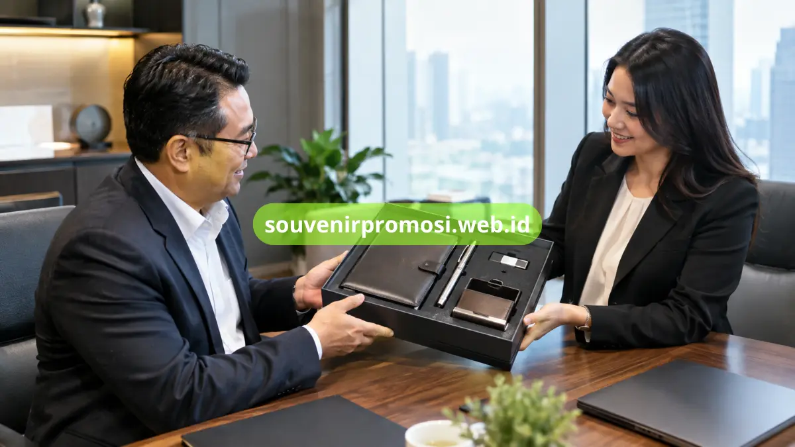

Set ATK premium meja kerja korporat memadukan alat tulis dan aksesori meja dengan identitas perusahaan sehingga sesuai untuk corporate gift, meeting, onboarding, dan apresiasi klien.
Souvenir Promosi menyediakan komposisi set ATK premium yang dapat disesuaikan dengan kebutuhan branding, penerima, dan skala acara perusahaan Anda.
Poin Penting
- Set ATK premium memadukan fungsi kerja dengan kebutuhan branding korporat.
- Pulpen metal grafir dan agenda kulit emboss cocok untuk kesan profesional.
- Desk organizer dan flashdisk custom dapat menambah fungsi paket.
- Komposisi dapat disesuaikan dengan penerima, acara, volume, dan konsep kemasan.
- souvenirpromosi.web.id melayani kebutuhan custom logo untuk perusahaan.
Daftar Isi
Kenapa Set ATK Premium Meja Kerja Korporat Efektif untuk Branding?
Set ATK premium efektif sebagai corporate gift karena memadukan kebutuhan kerja, tampilan profesional, dan ruang branding perusahaan dalam satu paket.
Set ATK premium meja kerja korporat merupakan paket alat tulis dan aksesori meja yang dirancang untuk penggunaan profesional sekaligus menjadi media identitas perusahaan. Komposisinya dapat mencakup pulpen metal grafir, agenda kulit emboss, desk organizer, dan flashdisk custom.
Souvenir kantor yang memiliki fungsi kerja cenderung tetap relevan setelah acara selesai. Pulpen digunakan untuk mencatat, agenda membantu perencanaan pekerjaan, desk organizer membantu menata meja, sedangkan flashdisk dapat mendukung kebutuhan penyimpanan data.
Untuk kebutuhan corporate gift, komposisi produk dapat disesuaikan dengan karakter penerima. Paket untuk eksekutif dapat menonjolkan material formal, sementara paket event dapat menekankan fungsi dan kemudahan distribusi.
DataReportal melaporkan lebih dari 200 juta pengguna internet di Indonesia pada awal 2025. Angka tersebut tidak mengukur efektivitas souvenir, tetapi menggambarkan lingkungan bisnis yang menggabungkan interaksi digital dengan pengalaman fisik. Dalam konteks branding fisik, produk meja kerja tetap dapat menjadi titik kontak visual yang digunakan berulang.
Spesifikasi dan Varian Material Apa yang Cocok untuk Set ATK Premium?
Material set ATK premium dapat memadukan metal, kulit atau kulit sintetis, kain, plastik berkualitas, dan material organizer sesuai fungsi serta konsep branding.
Pulpen metal grafir sesuai untuk paket formal karena ukurannya ringkas dan dapat diberi identitas perusahaan melalui grafir. Agenda dengan cover kulit atau kulit sintetis dapat menambah bidang branding dan fungsi pencatatan.
Desk organizer memberikan fungsi penyimpanan perlengkapan kerja di meja, sedangkan flashdisk custom dapat melengkapi paket yang membutuhkan unsur digital. Tidak semua material menerima teknik branding yang sama, sehingga metode custom perlu disesuaikan dengan permukaan produk.
Untuk paket yang ditujukan kepada klien atau mitra bisnis, kombinasi pulpen dan agenda dapat dibuat lebih sederhana. Untuk onboarding atau hadiah penerima khusus, komposisi dapat diperluas dengan organizer dan flashdisk.
Apa Saja Opsi Teknik Custom Logo pada ATK Premium?
Teknik custom logo yang umum digunakan mencakup grafir, emboss, dan printing, dengan pemilihan metode mengikuti material, ukuran bidang, dan kebutuhan visual.
Grafir dapat digunakan pada material tertentu seperti metal dan memberikan hasil yang relatif minimalis. Teknik ini cocok untuk pulpen metal ketika perusahaan menginginkan identitas yang terlihat formal.
Emboss membuat logo tampil menonjol atau tertekan pada permukaan yang sesuai, seperti cover agenda. Printing memberi fleksibilitas warna pada material yang kompatibel dan dapat digunakan ketika identitas visual perusahaan membutuhkan elemen warna tertentu.
Ukuran logo, posisi branding, warna, serta jenis produk perlu diperiksa bersama sebelum produksi. Visualisasi desain atau mockup membantu memastikan proporsi logo tetap rapi.

Bagaimana Set ATK Premium Digunakan oleh BUMN, Startup, dan Korporat?
Set ATK premium dapat digunakan untuk meeting, seminar, onboarding, apresiasi klien, konferensi, dan kegiatan internal dengan komposisi berbeda sesuai penerima.
BUMN dapat menggunakan set ATK untuk kegiatan rapat, seminar, hubungan kelembagaan, atau apresiasi. Pulpen dan agenda menjadi kombinasi yang relevan dengan aktivitas pencatatan dan pertemuan profesional.
Startup dapat memanfaatkan set ATK sebagai onboarding kit, merchandise acara, hadiah mitra, atau perlengkapan internal. Desain modern dapat diterapkan melalui kombinasi notebook, pulpen, dan organizer.
Perusahaan korporat dapat membuat paket berdasarkan tingkatan penerima. Paket ringkas dapat digunakan untuk distribusi lebih luas, sedangkan paket dengan beberapa item dapat diberikan kepada klien atau mitra tertentu.
Bagaimana Menyesuaikan Set ATK dengan Anggaran dan Volume?
Komposisi set dapat disesuaikan melalui jumlah item, material, teknik custom logo, kemasan, dan volume sehingga kebutuhan perusahaan tetap terarah.
Untuk volume besar, komposisi sederhana seperti pulpen dan agenda dapat menjadi pilihan praktis. Paket dengan lebih banyak item dapat digunakan untuk penerima khusus atau agenda bisnis tertentu.
Volume, deadline, desain logo, dan jumlah penerima sebaiknya ditetapkan sejak awal. Informasi tersebut membantu menentukan komposisi dan kebutuhan produksi secara lebih terukur.
Apa yang Perlu Disiapkan Sebelum Custom Logo?
Data utama sebelum custom logo adalah file identitas perusahaan, jumlah kebutuhan, produk, teknik branding, konsep warna, kemasan, dan jadwal penggunaan.
Logo dengan kualitas yang baik memudahkan penyesuaian ukuran dan posisi. Perusahaan juga dapat menentukan apakah identitas ingin dibuat minimalis melalui grafir atau emboss, atau lebih menonjol melalui printing.
Mockup penempatan logo perlu diperiksa sebelum produksi untuk memastikan ukuran dan posisi sesuai dengan bidang produk. Pemeriksaan ini juga membantu menyelaraskan desain produk dengan identitas visual perusahaan.
Mengapa Kemasan Penting untuk Set ATK Premium?
Kemasan menyatukan beberapa produk menjadi satu corporate gift yang terorganisasi sekaligus membantu melindungi produk selama distribusi.
Pulpen, agenda, organizer, dan flashdisk akan terlihat lebih terstruktur ketika ditempatkan dalam box dengan susunan yang sesuai. Kemasan formal juga dapat mengikuti identitas visual perusahaan tanpa membuat tampilan terlalu ramai.
Untuk pengiriman ke berbagai wilayah, kemasan perlu mempertimbangkan perlindungan produk. Perusahaan dapat menentukan jenis kemasan berdasarkan karakter item, tujuan pemberian, dan kebutuhan distribusi.
- Pemilihan material, teknik custom logo, dan kemasan dapat disesuaikan penuh dengan identitas dan anggaran perusahaan Anda.
- Set ATK premium tetap relevan digunakan setelah acara selesai sehingga nilai branding bertahan lebih lama.
- Souvenir Promosi siap membantu proses custom dari konsultasi komposisi hingga produksi dalam jumlah besar.
Cara Memesan Set ATK Premium Custom Logo
Jangan tunda kebutuhan corporate gift perusahaan Anda. Kunjungi katalog lengkap dan ajukan penawaran sekarang di souvenirpromosi.web.id, atau hubungi tim Souvenir Promosi untuk konsultasi komposisi, material, dan estimasi kebutuhan sesuai skala perusahaan Anda.